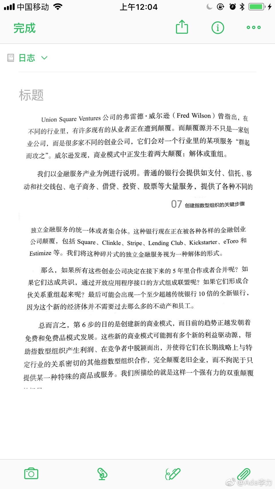
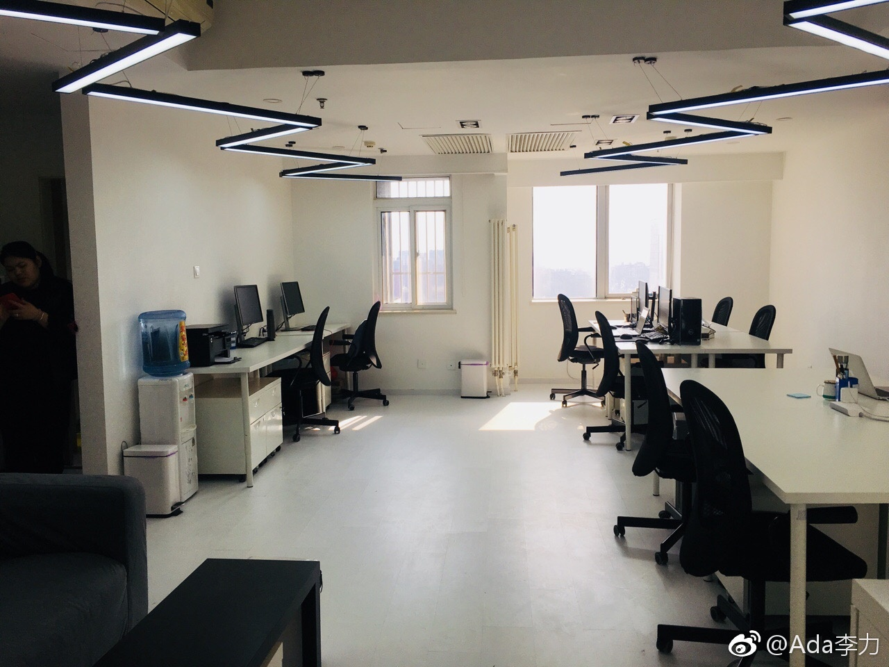

#读书# “商业模式中正发生着两大颠覆：解体或重组”书里金融服务的例子举得很好。而我马上想到的是餐饮，原来只是餐单上的一道菜，单独拿出来做个餐馆，而且可以迅速地连锁化，这是解体的现实例子。不过，接下来的问题是：餐饮的重组机会在哪里呢？还有医疗行业，解体的机会在哪里？ 
有些职场方面的争议，最不能看的是媒体人员，资讯博主类的评论，这些人的立场基本是蹭热点，抓眼球，哪些话能让底层开心就说哪些，至于听TA们建议而去行动的话，后果如何，这些人是不管的。职场案例应该多看看哪些人的评论呢？老板，职场精英，HR。 可惜这些人通常不会在公开场合发表看法。别以为网络上一片声讨，同仇敌忾，就以为自己站在真理的一方了。真相往往相反。
请病假然后人跑国外旅游被发现辞退，有人说请病假后干什么不是自己得自由么？自由的含义就是这么搞坏的。上班时间接老公电话被辞退，前因是公司禁止接打私人电话，公柜保管手机并签字。有人说这种电话都不让接的公司要被淘汰。你牛掰的话可以不去，凡事都能和稀泥倒真是毛病。@Ada李力:有些职场方面的争议，最不能看的是媒体人员，资讯博主类的评论，这些人的立场基本是蹭热点，抓眼球，哪些话能让底层开心就说哪些，至于听TA们建议而去行动的话，后果如何，这些人是不管的。职场案例应该多看看哪些人的评论呢？老板，职场精英，HR。 可惜这些人通常不会在公开场合发表看法。别以为网络上一片声讨，同仇敌忾，就以为自己站在真理的一方了。真相往往相反。
公司和员工有利益冲突，各自站在自己角度上说话无可厚非。不过，这类事情终归要有一个方向，我的看法就是只要整体收益要大于个体之和，那么这个方向就应该提倡。这也是社会发展的趋势，是信念问题，无关利益。@Ada李力:有些职场方面的争议，最不能看的是媒体人员，资讯博主类的评论，这些人的立场基本是蹭热点，抓眼球，哪些话能让底层开心就说哪些，至于听TA们建议而去行动的话，后果如何，这些人是不管的。职场案例应该多看看哪些人的评论呢？老板，职场精英，HR。 可惜这些人通常不会在公开场合发表看法。别以为网络上一片声讨，同仇敌忾，就以为自己站在真理的一方了。真相往往相反。
北京办公室又换地方了，一年一变。2016年春节，在北京蒲公英创业园租了两个工位。2017年春节，在万达广场那租独立办公室，5个工位。2018年春节，在万达广场换更大办公室，10个工位。这个时代，也不是人越多越好，精炼的十人团队，可以做很多事。 北京·石景山万达广场 